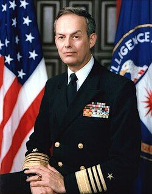

Bobby Ray Inman
Former NSA director, born 1931

A retired four-star Navy admiral who led much of the U.S. intelligence community: Director of Naval Intelligence from 1974 to 1976, director of the National Security Agency from 1977 to 1981, and deputy director of Central Intelligence until he retired in 1982. He later sat on the board of the defense contractor SAIC, and his 1993 nomination as secretary of defense was withdrawn. 1,2
UFO researchers often cite a 1989 phone call in which he answered a researcher's questions about "recovered vehicles" without denying they existed. He gave no details and is reported to have said later that he thought the questions were about underwater vehicles. 2,3
Open in the interactive Watcher
Sources
- Bobby Ray Inman Wikipedia
- Bob Oechsler's phone call: the reply that became a UFO controversy (Art Grindstone) Unexplained, May 4, 2026
- The Inman/Oechsler Phone Call on "Recovered Vehicles" (compiled by Giuliano Marinkovic) OmniTalk Radio Network, Dec. 6, 2023